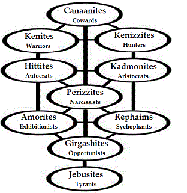
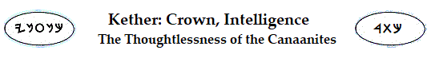
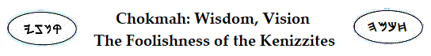
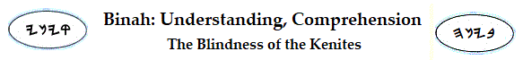
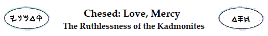
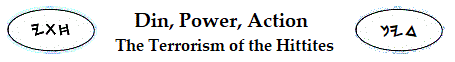

 The Howl of Palestinia
Jihad: the Battle Within
When HaShem gave the promises to father Abraham and to his seed, the lands occupied by ten nations were promised.
Because Torah is spiritual, we understand that its promised "lands" aren't parcels of real estate. Rather, they are metaphorical references to the body's physical structures, which house the faculties of life within the human tabernacle.
The spiritual faculties of man are seated within the organic boundaries of the physical body's organisms. We acknowledge this when we speak of the heart, mind, emotions, and so forth, which is the reason it is taught that the Kingdom of Heaven is within you. That great treasure is housed in earthen vessels until perfection comes upon us, when mortality shall put on immortality as the New Jerusalem descends upon us from above.
The challenge and the promise, then, is that the spiritual mind must take precedence over the carnal mind, suffusing the body with the Light of HaShem, that the new creature may attain its maturity in Mashiyach, thereby manifesting Y'Sharla. To that end, we are called to leave all personal Earth-bound trials behind, that we can be free to take up the path to Golgotha unencumbered by the cares of the world.
To walk that path in the footsteps of Y'shua is to enter into the pagent of the exodus from Egypt in the company of Moses and the rest; for the path plays out in the wilderness of Gethsemene, where we will face the dark night of the soul, wrestling with God as did Jacob at Beth-El. These trials are given that we might resolve unsettled matters, purchasing new garments for the new creature by toiling in the Father's soul fields. The dust of the ground carries the Father's curse, which is lifted from the new creature as the grace of gentle Immanual is imbued with Power from on high. Resting in the Father, we find that we are prepared to walk the path of the masters, furnished to all good works; for it is not we who speak or do anything, but the Power of God in us.
Jihad has nothing to do with any exterior consideration. It is fought within through interactions with others who are fighting their own battles. Brothers are for adversity. They clash, bringing their strengths to points of contention. If one insists upon having the advantage, that one is Cain. Unloving aggression may seem to have advantage for a season, but the real strength belongs to the one willing to risk his life by engaging a brother's demons, that the Salvation of God might spread throughout the earth.
Yes, there is that which must perish in each of us. King Saul might killl his thousands, but the foes keep replenishing themselves. David kills his tens of thousands: not by sword and axe, but by circumcision. He mines Palestinia for new recruits, knowing there is one law for all.
The beatitudes of Saint Matthew are as the blessings shouted from Mount Gerizim. The howl of the Philistines is filled with the curses of Mount Ebal. Hopefully, these words will clarify the distinction; for the characteristics of the ten nations of Canaan, whose people share the sordid life dynamics with which we are all familiar, are implicit in the Sephiroth as follows:
|  |
The Canaanites are, literally, "those who turn the back." Children of Cain through
Cham/Ham, meaning "heat," they live under the curse decreed for their good by
Noah/Noach, meaning "the will to arise, to be elevated,
favored." They are servants to
Yapeth/Japeth (to those who are expanding, opening unto productive growth) in the tents of
Shem (in the tabernacle of the Name).
As a result of Noah's curse, the rashness of
Ham, their patriarch, is tempered by the blessing of shame, for their good. Noah's prophecy concerning the service of Cham's progeny to Yapeth and Shem is reason for caution against judging the Canaanites uncharitably, if other caution against judgment should be thought not to apply.
In their occupation of
the sphere of intelligence in Adam Kadmon, it is understood that the
Canaanites are unwilling to apply their minds for enlightenment: they
turn their backs to it, either actively or passively. They prefer, as it
were, the slavery of Mitzraim. They are more comfortable with
the iron-clad definitions and the specified and regulated boundaries of Egypt
than with the struggles towards liberty that come only by crossing the fearsome Sea of Reeds into an arid wilderness of questionings, with its unknowns and its apparent scarcities and hardships.
The Red Sea, sometimes called the "Sea of Rods," signifies commitment to put an end to all faulty expressions,
at the risk of great physical discomfort and possible death, by confronting
the dilemmas that come with living as a spiritual creature within a fleshly shell.
This, the Canaanites fear to do. Without faith in the elevating power of Elohim in their lives, the Canaanites perpetually submit themselves to the status quo. They are "sensible," according to the wisdom of the world, by the operations of an alienated spirit.
|  |
Unwilling by nature to explore things above at the peril of things below, the Canaanites turn their attention wholeheartedly to the cares of this world. The Kenizzite branches of the family of Cain's spiritual descendants are "hunters," literally. With mercy far from their hearts, their vision remains fixed upon the prey that fits their appetites, ever searching.
To the Kenizzite, everything is a commodity. To them, life is a series of tradeoffs, and in everyy exchange, they must come out on top. They will have their way! Whether in the context of business, sport, personal relationships, or the hunter's blind, they'll do what it takes to meet their objectives. If another has what they fancy, they're relentlessly alert for ways of attaining it. Their ravenous hunger compels them to hunt without compassion; for they are obsessed with the imprisoning context of their own thoughts and appetites, and they are capable of mourning only for themselves, should misadventure arise.
|  |
As the Kenizzite hunters of the land of Canaan become proficient providers, they conceive of extending the application of their skills: they become Kenites. They believe that their exceptionalism provides a service humanity would not have without their own, personal sacrifice, the risks they take while investing their special skills to satisfy their agenda. The buffalo, the forest, the widow's house? Nothing can be permitted to stand in the way, because their work puts food on the table, after all is said and done.
Ultimately, therefore, the Kenites begin to practice the arts of death upon their fellow men. They become specialized "warriors," which is a literal meaning of the tribal name. Kenites exalt their imagined needs for survival and success into the dimensions of intentional warfare, hoping to annihilate competition and to establish their "brand" as the territorial standard in the "lands"-- in the areas of endeavor-- they see as belonging exclusively to them. They comprehend need; they understand the cycles of supply and demand, and they act. Meekness is far from their hearts.
|  |
Dividing the world into camps of "us" and "them," the
Kadmonites are, literally, "ancestor worshippers," in one of the more negative constructions
of the name's meanings. They take it upon themselves to consolidate the spoil won by their
more aggressive brethren and lay it up for posterity. Serving the
manifest destiny they learned from forebearers, they actively begin to covet and to target what is expedient for enriching and proliferating the temporal welfare of
all things they
"own." Their most important possession, of course, is their own lineage, whether
of bloodline or of ideology.
Thus, the Kadmonites
take upon themselves the function of a profaned priesthood. They begin to define
and enforce common-man values that are contrary to the will of HaShem,
which is that the familly of man live as a holy Unity. Their minds are
trained to serve the needs of their physical lives, and any who suggest
that the body's purpose is to serve the mind are treated as dangers to
society. Hence, as their most successful endeavors are bested by time,
their dynasties and empires grow old; and they crumble by force of an inner vacuum.
The Kadmonites are not filled by their ever-growing hunger for survival and its accompanying
readiness to spill
innocent blood. Love, mercy? The games of children!
|  |
Rendered literally into English as "savages," the Hittites prosecute the wills and maintain the standards of kindred nations by the force of terror that pervades the Canaanite kingdoms, generally. In times of relative peace, when weapons of war are withdrawn into the dimension of threat against any future disruption of Canaanite priorities, the Hittite terrorism also relaxes into the realm of oratory, wherein that strange elohim of fear-- the hierophant-- becomes the demon by which they enforce their wills and proliferate their values. If mercy is seen at all in their actions, it is used only to bind their victims more securely to fear of the Canaanite peoples and their ideals, in the pitiful drama of "good cop, bad cop."
|
|||
|
The Perizzites are the "proud," the "headstrong." Drawing their strength from the Kadmonites at their right hand, their minds are so full of themselves and their imagined virtues that there is little room at all in their lives for the vision of God. Their own individualities occupy their thoughts at all times: to the extent that they become incapable of conceiving that another might speak from some other context. They see themselves as owning their language and are jealous of any who would war against dogma with conversation laden with suggestive connotations. Their vanity becomes their prison because it isolates them from the potential for change that comes by honest interaction with those having differing points of view. The heart of the Perizzite is deceitful above all things, and desperately wicked. Who can know it? Its core is hidden within a maze of unrealities. |
|||
|
|||
|
"Rephaim" is most commonly translated as "giants," which term is accurately applied to their world view: all things, to the Rephaims, are gigantic in their implications-- so huge as to prevent any possible will for action on their parts from progressing unto
some active implementation. The Canaanites, in their families, have will to take only what appears, at any given moment,
to be the easiest course. For all their carnal belligerence and boastings-- by which appearances the Rephaims affect and maintain facades of gigantic proportions, both for themselves and for their many saviors (whether they be of flesh, of science, of politics, or of religion)-- the Rephaims are miserable creatures; and they are considerably less than men because they imagine that it is necessary to be something more. When an ordeal of testing comes, the Rephaim assumption of its demands disables their resolve to take a stand, themselves; and they run whining to whatever Egyptian staff appears likely to come to their aid, whether the spear or the wand. The Rephaims need not believe in their deliverers; it is enough that they can transfer onto them responsibility for their perils, relieving themselves of the burden and the need to take action. They mock the persecutions others might suffer for principle, and they are ever ready to flee from imminent injury to themselves. When uppermost, they do not know the healthful ways of peace; but as soon as they begin to falter, they sue for treaty as a prescription against pain. |
|||
|
|||
|
Amorites love to have the preeminence, celebrating themselves at every opportunity in any context. Never satisfied with their standing in Canaan, they are convinced they warrant the homage of their brethren. Application of their wills is always with intent of preserving, serving, and furthering self. Righteousness, to the Amorite, is a matter of appearances. Ignorant of the building of principle in the inner man by the infusion of God's righteousness, they flee injury to their facades because they know that their posturing can be replicated in another time and at another place before another audience. Amorites suffer only when the veneer is damaged: when the underlying filth is actually exposed, therefore, they can endure suffering no longer and begin to destroy. |
|||
|
|||
|
When the Girgashites are reviled, tormented, or defamed for any reason, whether justly or unjustly, they get even. They have no foundation in love; and revenge and retribution are pursued not only in the heat of a situation, but also as policy for long times afterwards-- until the record is set straight, according to Girgashite reckoning. Their name means, literally, the "despoilers"; and their underlying resolve, whether or not they should wrong another in their schemes for self-aggrandizement, is always to enrich themselves at every opportunity by any means. If baubles should not satisfy the needs of their chronic inner pain, they do not hesitate to rob a better man of his good name or of his mortal life. |
|||
|
|||
| Taken as an empire of allied nations, the Canaanites perfect the dominion of their kingdom in every sphere of the inner man by the operation of the Jebusites among them. A Jebusite is, literally, "a tyrant, an abuser of authority." In their world view, there are two kinds of people: masters and slaves, and the Jebusites choose to be masters. In their estimation, a kingdom of equals lifting each other up and caring for each other's needs as brethren would be anarchy, were it possible; and they've no interest in living that kind of life, anyway. In all things, therefore, they take up the hammer, for fear of becoming the anvil. | |||
| A Scent of Jericho | |||
|